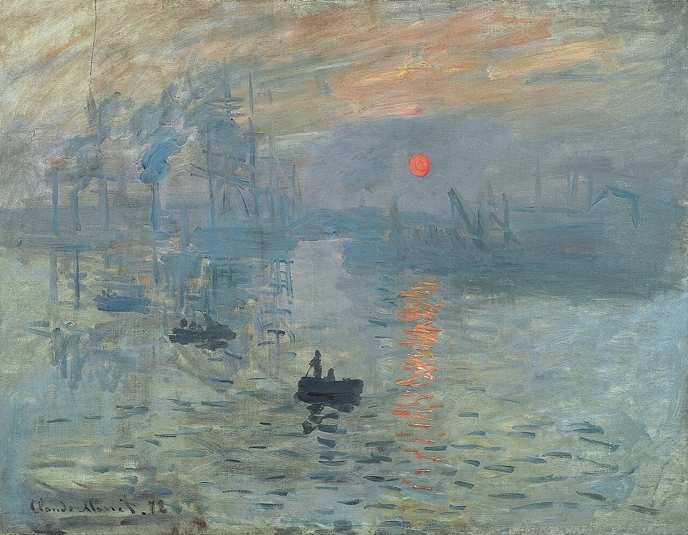
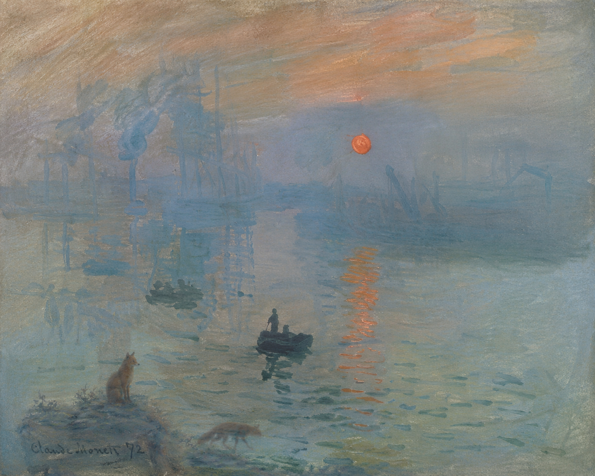

Impression, Soleil levant est un tableu de Claude Monet.
Claude Monet a peint cette toile en une séance.
Il a choisi un de ses thèmes favoris: un port symbole de la révolution industrielle du XIXe siècle.
Et il s'inspire aussi des marines, soleil levant et soleil couchant peints avant 1872 Eugène Delacroix.

Le renard esaye de chercher d'autre renard pour parler avec eux.
Mais le renard n'en aperçoit aucun et il se rend compte qu'il n'y a personne.
Et du coup le renard se sent seul parce qu'il a personne à qui parler.